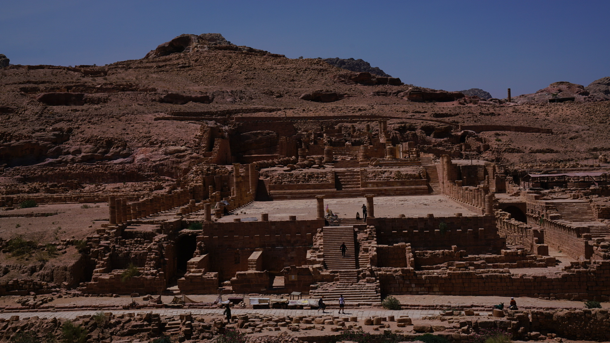
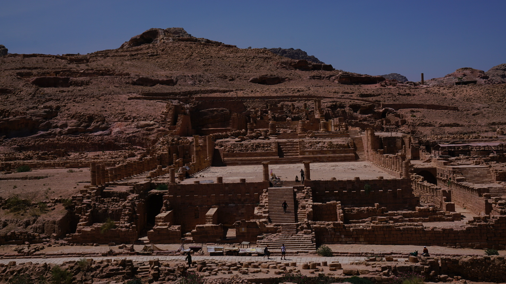

I'm really glad that I extended my stay in Granada.
Although no one seemed to be interested in the Palace of Aixa, mother of the last emperor of the Moorish dynasty. It was on a mountain top and was a beautiful spot to watch sunset.
Aisha al-Hurra, generally known under her Spanish name Aixa, was the spouse of Muhammed XI and of Abu l-Hasan Ali, and the mother of Muhammad XII.
Aixa was also known by the Muslims as Aisha al-Horra; "al-Horra" being a noble title meaning "Free Woman".
Due to the fact that she was one of the living descendants of Muhammed, she was politically active and exerted influence upon the policy of state during the last years of the Emirate of Granada.
Be carely when you are walking on the Luis I Bridge in Porto! There is no travel lights and I almost got run over by a train.
For visiting Petra, definitely bring enough water, it will be almost a day's walk in desserted area.
Access to the Petra city is through a 1.2-kilometre-long gorge called the Siq, which leads directly to the Khazneh. Famous for its rock-cut architecture and water conduit system, Petra is also called the "Rose City" because of the colour of the stone from which it is carved.
It has been a UNESCO World Heritage Site since 1985. UNESCO has described Petra as "one of the most precious cultural properties of man's cultural heritage".
In 2007, Al-Khazneh was voted one of the New 7 Wonders of the World.